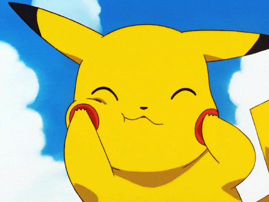
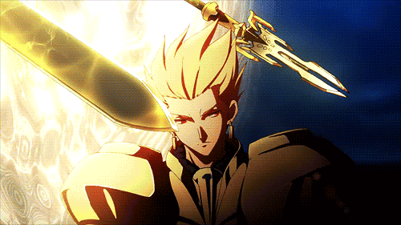

Pokemon
A obra foca no cotidiano do nossos dois protagonistas, Atsushi Nakajima e Osamu Dazai, junto da agência de detetives em que eles fazem parte, onde tem indivíduos dotados de habilidades especiais capazes de resolver e solucionar mistérios e casos considerados fora do alcance da polícia e dos militares.
MANUNTENÇAO!!!!!!!!!!!!!!!!!
Chainsaw Man
Acompanhanhamos a história de Denji, um adolescente que passa por dificuldades financeiras junto do seu cãozinho pochita, até que, certo dia, ele é cercado por demônios zumbis e morre, mas, depois do pochita (um demônio), oferecer seu coração para Denji, ele renasce como o Homem-Motosserra.

Fate
Fate é basicamente tudo igual, uma guerra entre magos e seus servos (espíritos de heróis do passado ou futuro) pela posse do Cálice Sagrado (Santo Graal), um objeto podereso o bastante para realiza qualquer desejo para o seu Mestre. Ordem recomendada:
- Fate/zero (2010) (conta a historia antes dos acontecimento do stay night);
- Fate/Stay Night (2006) (rota da saber);
- Fate/Stay Night: Unlimited Blade Works (2014) (rota da rin);
- Fate/stay night: Heaven's Feel (2017) (rota da sakura)
Os Fates de 2006/2014/2017 a historia é semelhante, mudando apenas algumas cenas, a garota principal, e claro, a animação. Existe outros fates, mas fica ao seu criterio ao qual assistir depois.
Assistir Fate/zero 2º temporada
Jujutsu Kaisen
Jujutsu Kaisen é sobre um estudante do ensino médio, Yuji Itadori, que engole um talismã amaldiçoado, o dedo de um demônio, e fica possuído. Yuji é condenado à morte por exorcismo por feiticeiros de Jujutsu, mas antes que isso aconteça, ele é encarregado de encontrar e consumir os dedos restantes desta maldição.

Kimetsu No Yaiba
Conta a história de Tanjiro Kamado, um bondoso jovem que ganha a vida vendendo carvão. Em uma certa noite, Tanjiro nao consegue voltar para casa, e acaba indo apenas pela manha, chegando la, ele vê sua família toda morta por um oni (demônio). E, para piorar, Nezuko, sua irmã mais nova e única sobrevivente, também acabou transformada em um demônio.

Kiseijuu Sei No Kakurits
Izumi Shinichi, 17 anos, é um estudante que mora com seus pais em uma vizinhança pacata de Tóquio. Certa noite, alienígenas no formato de vermes invadem a Terra e começam a tomar controle do cérebro de hospedeiros humanos ao entrar por suas orelhas ou nariz. Um deles acabando conseguindo parar dentro do braço do nosso protagonista, e acaba não conseguindo controla-lo, agora, Shinichi e Migi (o alienígena que entrou dentro do braço do Shinichi), terão que coexistir.

Cowboy Bebop
Conta a história de caçadores de recompensa que integram a tripulação da nave Bebop. O ex-gângster Spike Spiegel trabalha junto ao amigo e ex-policial Jet Black para capturar criminosos em todos os cantos da galáxia. Além deles, a misteriosa e habilidosa Faye Valentine e a hacker Ed fazem parte da equipe.

Tengen Toppa Gurren Lagann
A história se passa em um futuro fictício em que os seres humanos foram forçados a viver sob a superfície terrestre em isoladas civilizações subterrâneas. Essas "vilas" não têm nenhum contato com a superfície ou outras vilas. Tudo muda para nossos protagonista, Kamina e Simon, depois que Simon encontra um fantástico aparelho e logo em seguida a vila é invadida por um intruso, seguidamente de uma garota que combatia esse intruso, Yoko. Após esses acontecimentos, onde o "caminho para a superfície", é somente o início, eles passam a seguir caminhos que jamais poderiam imaginar.

Tokyo Ghoul
Em Tóquio, criaturas conhecidas como ghouls vivem entre os humanos e os devoram para sobreviver. Dentre eles, o jovem universitário Ken Kaneki leva uma vida pacata entre livros, até que um trágico encontro o coloca diante desses seres e o obriga a lutar por sua humanidade.

Zero No Tsukaima
Acompanha as aventuras dos protagonistas Louise e seu familiar Saito, que foi invocado de um lugar chamado Japão. Louise é uma estudante do segundo ano na Academia de Magia de Tristain. Neste mundo, os que podem usar magia são magos ou nobres.